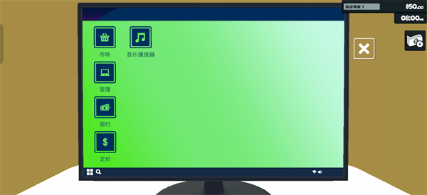
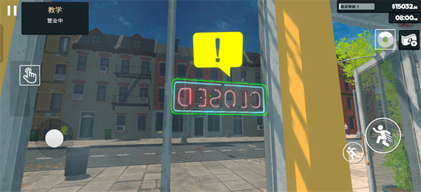

从一个货架到两条过道：我在超市模拟器里当了三个月老板
一次偶然的机会入坑了这款超市经营游戏，从第一次进货手抖到学会布摄像头、搞促销、养看门狗，三个月下来像真的开了一家店。
周六下午三点，我本来在刷短视频，直到那条推送冒出来——"你有没有想过自己开一家超市？"。我犹豫了五分钟，还是点进去看了介绍，从官方下载拿了安装包试玩——然后……就停不下来了。
这不是那种点一点就能自动经营的放置游戏，它的supermarket官网上也有更详细的介绍。它是真的让你从一个空店面开始：选货架、进第一箱货、贴价签、开门营业。店里那台电脑是整个经营的中枢，订货、调价、查库存、管钱全靠它。我第一次打开主菜单的时候，对着那五个入口——市场、定价、储藏、银行、音乐播放器——愣了好一会儿。音乐播放器？居然还有这个，放着背景音乐理货，氛围一下就对了。

开局第一天：手忙脚乱的开张
朋友跟我说开局别贪多，先把最基础的商品摆起来。我进了一箱水、一箱方便面、几袋面包，把货架塞了三分之一就挂出了开门招牌。开门铃响的那一刻真的有顾客进来——不是NPC走过场，是真的在挑东西、真的在扫码付款。我紧张得盯着收银台，生怕算错账。
第一天赚了大概两百块，我记得很清楚。关店的时候我数着硬币，居然有点激动——这和我之前玩过的任何游戏都不一样，那种亲手把货架填满、亲眼看着顾客掏钱的感觉，是别的模拟经营游戏给不了的。

第一个麻烦：商品卖不动怎么办
大概开张第二周，我凭感觉进了一批自认为好卖的膨化零食，结果一周过去只动了两三包。我盯着储藏界面，那几箱货占着货架位置又压着资金，心里急得不行。后来才搞明白，促销不是一键开启的活动，而是你主动把价签往下调的行为。我把那批零食的定价压到市场价以下，又挪到进门就能看到的显眼位置。结果第二天就卖出去大半。剩下一点索性停订下架，不让卖不动的货一直占着格子。
这件事给我上了很重要的一课：没有目的的降价就是白送利润。促销要想清楚图什么——清滞销库存、给新店聚人气、还是旺季冲量？想不清楚就别动价格。
更糟的事：店里进了小偷
正当我以为经营步入正轨的时候，屏幕上第一次弹出了红框提示——有人正在偷东西。我点开对应的头像，把人赶出商店，但那次还是丢了两盒巧克力。
之后我开始认真研究防盗。小偷出现的时机没什么规律，开门后的顾客流里就可能混着，人少的时段更容易下手，高峰期也会混在人群里。我先在货架之间的过道上方装了摄像头，装修菜单里就能买，花了点小钱但挺管用。再后来，我养了一条狗。
养狗这件事一开始我没太在意，以为就是个装饰。但后来去supermarket文档翻了一下才搞明白，狗能明显降低盗窃概率，是威慑层面的加成——摄像头管发现与处理，狗管让贼不敢来。养了之后确实效果好很多，不过也学到一件事：狗不是摆一件家具进店就完事，状态好威慑才足，状态差了几乎白花钱，日常要记得喂食照看。
电脑里的市场：进货是门学问
店里那台电脑用得越来越顺手了。市场菜单里可以按箱下单浏览商品，定价菜单能看各商品的成本和市场价批量调价，储藏界面一目了然地显示库存存放情况。我现在每天开店前都先去市场扫一眼，看哪些商品库存快见底了，按补货的先后顺序下单。
有次我一时冲动进了太多箱牛奶，结果没及时卖出去占了仓储空间。后来我学会了一件事：旺季冲量之前先确认补货跟不跟得上，薄利多销的前提是你的货架上不能断货。
三个月后的现在
我的店现在有两条过道了，雇了两个员工，摄像头覆盖了主要走道，看门狗在店里慢悠悠地晃。每天开门铃响起的时候，我还是会有点小激动。
这款游戏最打动我的地方，是它那些看上去不起眼的小细节——音乐播放器放着店内BGM，收银台旁边的垃圾桶会满，货架上的商品摆得整齐不整齐似乎也会影响顾客的心情。它不是让你做一堆管理决策就完事，而是真的让你感受到"我在经营一家店"这件事。
如果你也想试试从零开始经营一家超市，可以自己找找看。要是碰到什么经营上的难题，比如怎么看电脑主菜单的五个功能、怎么布摄像头防盗、怎么用定价工具清库存，有一份写得挺细的中文文档可以翻一翻。
最后说一句，这款游戏的资料我同步整理到了三个地方，方便不同习惯的人获取：GitHub上有完整的文档源，Gitee和GitCode也都有镜像备份，国内访问更顺畅。